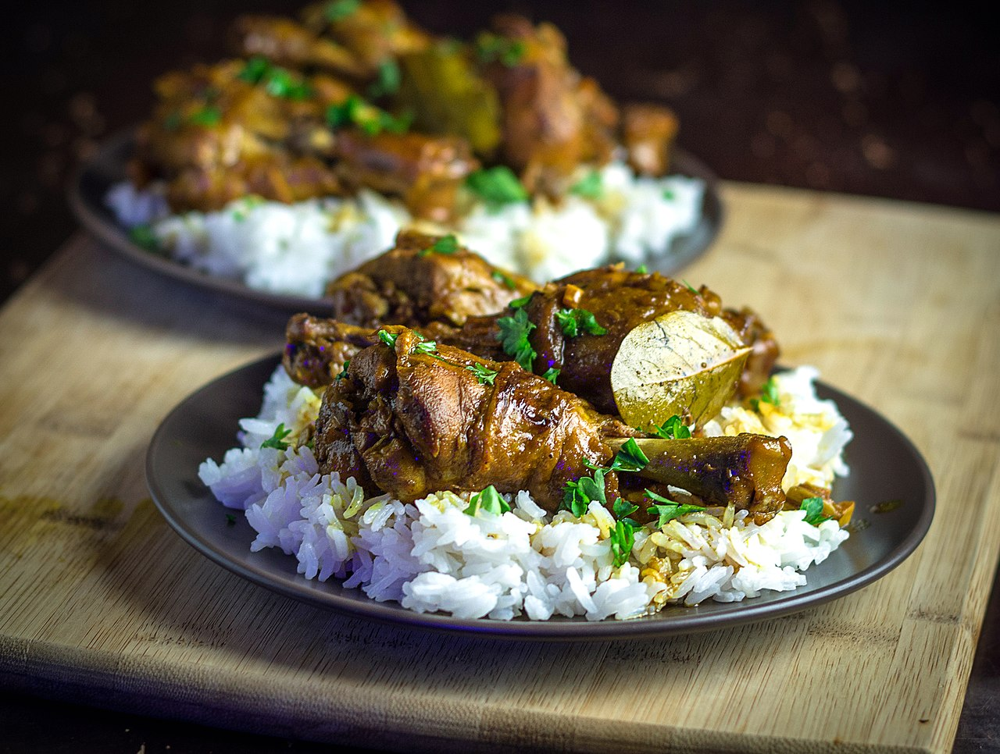
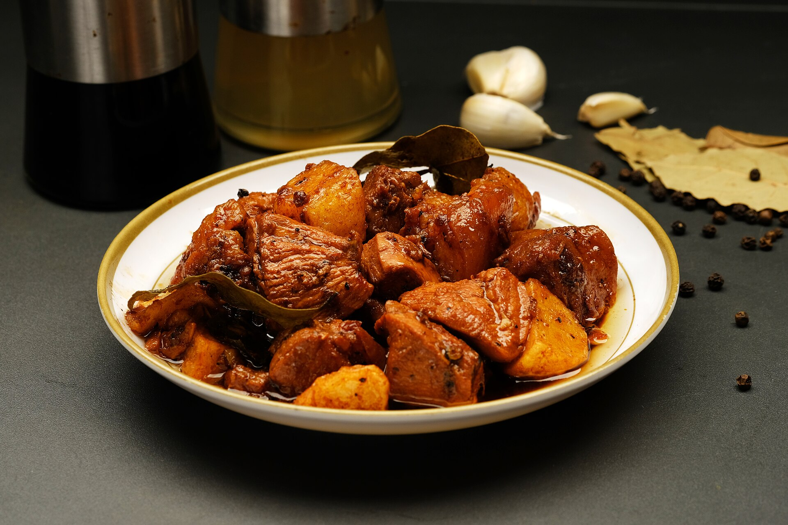
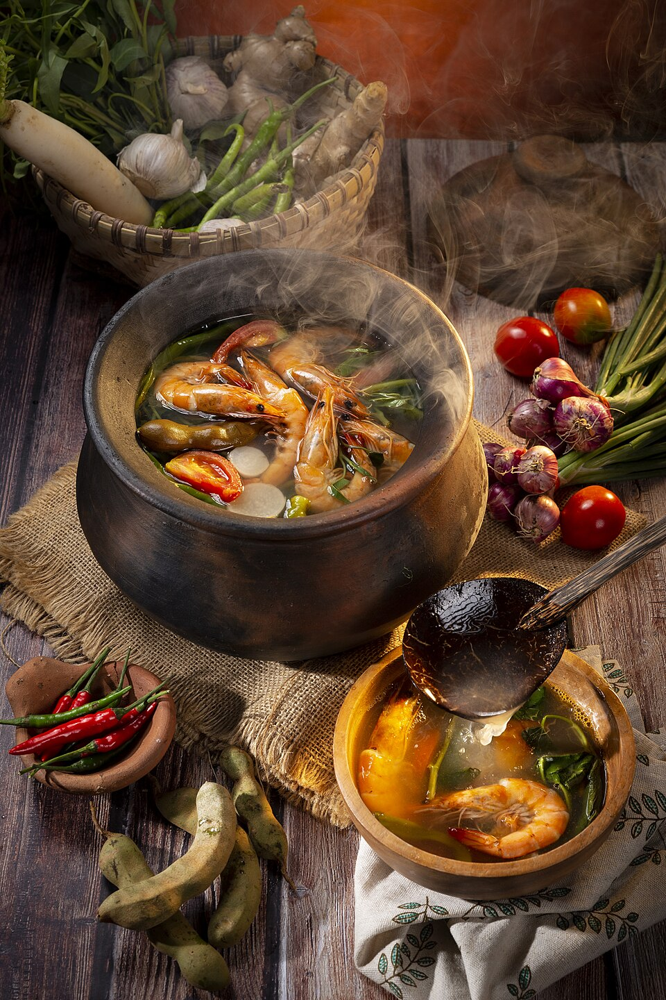
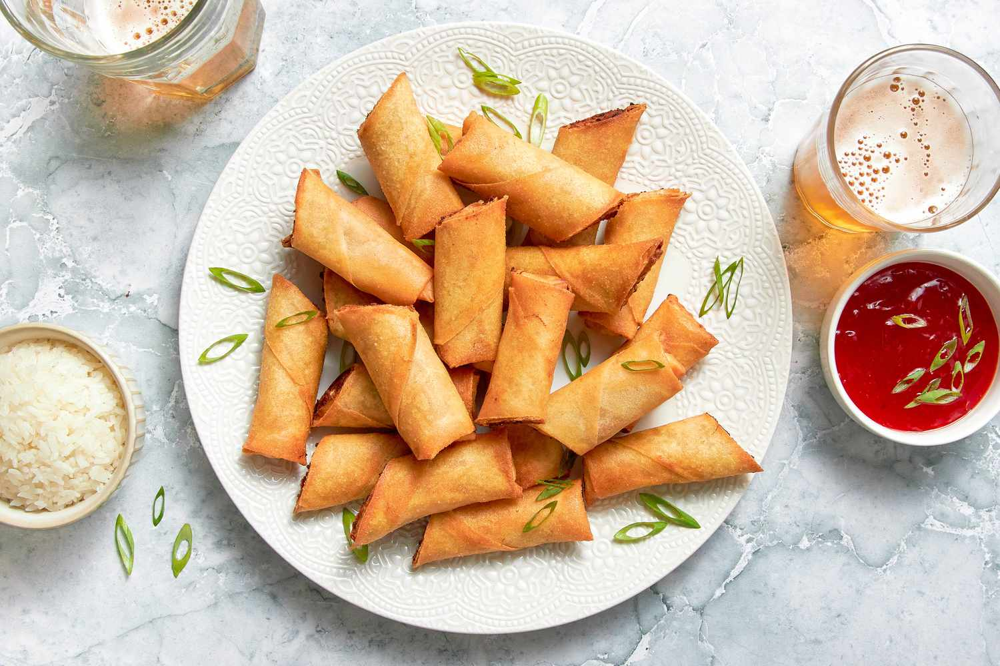
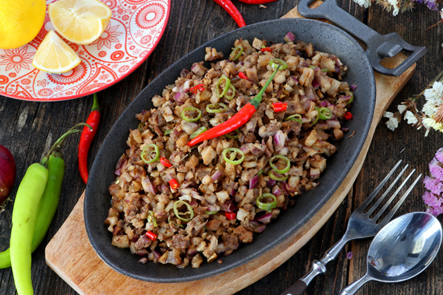
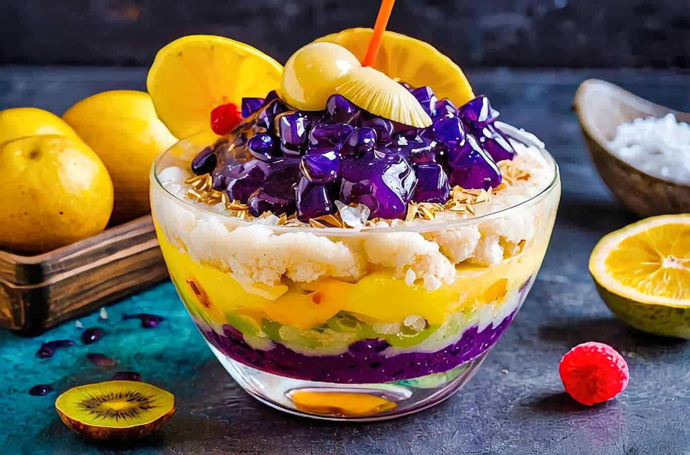

Filipino cuisine is a vibrant celebration of flavor, history, and culture. Shaped by centuries of indigenous traditions and influences from Spain, China, and neighboring Asian countries, Filipino food brings together sweet, sour, salty, and savory elements in a way that feels both comforting and exciting. Dishes like adobo, sinigang, and lumpia highlight the Filipino love for bold tastes, while regional specialties show the incredible diversity across the islands. More than just meals, Filipino food reflects the warmth of its people every dish is meant to be shared, enjoyed, and remembered.
Today, I'm going to share a bit about Filipino cuisine and I'll also recommend some dishes that I think you should definitely try. Whether you love rich meals or light snacks, there's a Filipino dish out there that will surprise you in the best way.
The first dish I want to share is adobo, which is often considered the national dish of the Philippines. Adobo is usually made with chicken or pork that's slowly cooked in a mixture of soy sauce, vinegar, garlic, peppercorns, and bay leaves.
The flavor is salty, savory, and full of rich, deep taste, with a little tang from the vinegar. It's the kind of dish that smells amazing while it cooks and tastes even better when you finally dig in.
I definitely recommend trying adobo if you enjoy salty, flavorful, and savory dishes. And trust me adobo is best when you eat it with rice, because the sauce soaks into the rice and makes every bite perfect.


The next dish I want to recommend is sinigang, one of the most famous Filipino soups. It's known for its refreshing sour flavor, usually made with tamarind, vegetables, and your choice of pork, shrimp, or fish.
Sinigang is especially perfect on a cold day—the hot, comforting soup warms you up right away, and the sour taste makes every sip exciting. It's a dish that many Filipinos love because of how unique and satisfying it is.
I really recommend trying sinigang if you enjoy sour, flavorful soups, and of course, it's best enjoyed with rice, which balances the sour broth beautifully.

The next dish I want to talk about is lumpia, one of the most loved Filipino snacks. Lumpia is a thin, crispy spring roll filled with meat and vegetables, then fried until golden and crunchy. It's so famous in the Philippines that you'll almost never see a birthday party without it lumpia is always there, and everyone grabs it fast.
I really recommend trying lumpia because it's simple but incredibly delicious. It tastes even better with Filipino banana ketchup, or with vinegar mixed with onions and cucumbers. That dipping sauce combo hits so hard it gives me nostalgia every time.

The next dish I want to share is sisig, one of the most iconic Filipino foods and it actually comes from my hometown in the Philippines: Pampanga, which is known as the Culinary Capital of the Philippines. Sisig is made from finely chopped pork, usually seasoned with onions, chili, and a mix of spices, then served sizzling on a hot plate. It's crispy, savory, a little tangy, and full of flavor in every bite.
I totally recommend trying sisig, especially if you enjoy bold, sizzling dishes. It tastes amazing when you squeeze calamansi on top and add a bit of toyo (soy sauce) for extra flavor. And of course, just like many Filipino dishes, it's perfect with hot rice—the combination is unbeatable.

The next dish I want to share is kare-kare, a classic Filipino stew known for its rich, creamy peanut-based sauce. It's usually made with oxtail, beef, or pork, along with vegetables like eggplant, pechay, and string beans. The sauce is thick, smooth, and full of that comforting peanut flavor that makes kare-kare so special.
I really recommend this dish because I personally love the taste of the peanut butter sauce-it's savory, a little nutty, and super satisfying. Kare-kare is usually enjoyed with bagoong (shrimp paste) on the side, which adds a salty kick that balances the creamy stew perfectly. And of course, just like many Filipino dishes, it's best eaten with rice so you can soak up all that delicious sauce.

Filipino desserts are all about comfort, color, and creativity. They're sweet treats that mix tropical fruits, creamy textures, and flavors that instantly make you feel at home. From cold, refreshing desserts perfect for hot days to warm, sticky classics enjoyed at celebrations, Filipino sweets always b ring joy to the table.
In this section, I'm going to share some of my favorite Filipino desserts—what they're made of, why they're special, and why I think you should definitely try them. These treats are not just delicious; they're a big part of Filipino culture and memories.
The first Filipino dessert I want to share is halo-halo, one of the most colorful and refreshing treats in the Philippines. The name literally means “mix-mix,” because it's made by mixing crushed ice with sweet ingredients like leche flan, ube, nata de coco, beans, jellies, and evaporated milk. Every spoonful gives you a different texture and flavor, which is what makes halo-halo so fun to eat.
I really recommend trying halo-halo when it's hot, because the cold ice and sweet t oppings cool you down instantly. It's the perfect dessert for summer or any warm day, a nd it's one of those Filipino treats that always makes you smile.
